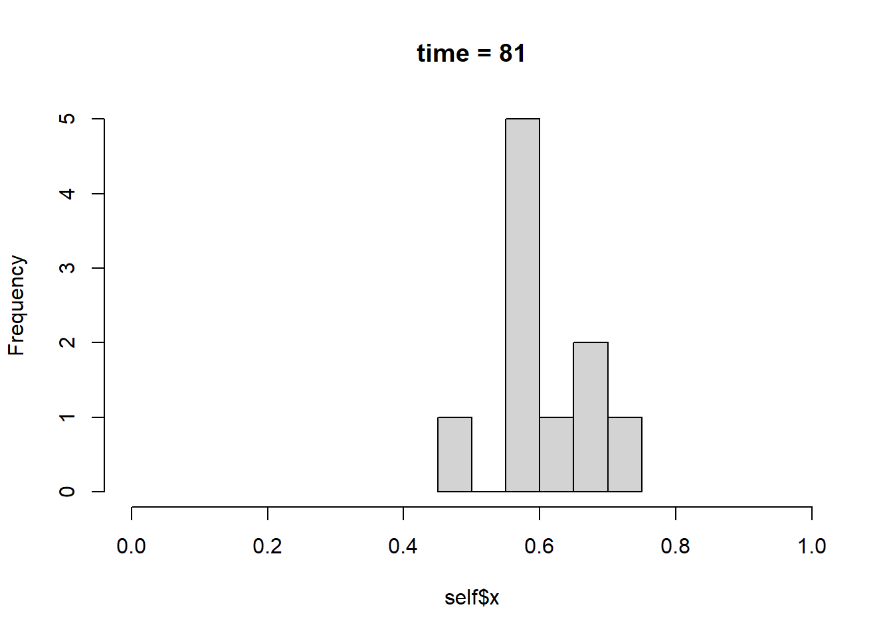

# ライブラリを読み込む
library(rABM)9. report_FUN
Note
rum_Gameを用いてシミュレーションの終わったら、次のステップとして結果の評価が通常行われます。 rABMではこの結果の評価をサポートする関数としてreport_FUNというフィールドが用意されています。この章では、report_FUNの基本的な機能について概観したうえで、（1）計算結果を出力する、（2）プロットを出す、（３）logと組み合わせたオブジェクト出す、という三つの使用方法について紹介します。
9.1 report_FUNの概要
report_FUNはシミュレーションの結果を評価するための関数です。report_FUNは大きく三つの目的に使用することが出きます。
シミュレーションの妥当性の検証：たとえば後の例でみるように平均への収束を企図して作成したABMがまったくそのような動作をしていない場合には、分析以前に設計が間違っている可能性があります。report_FUNはact_FUNが正しく動作しているのかを確認する目的で使用できます。
シミュレーションの結果の評価：実際の結果がどのようになっているのかを評価する目的で使用します。本来の意味でのreport_FUNの使用法です。
結果の統計量を取得するため：二つ目の使用法と実際には併用されますが、シミュレーション結果の統計量を取得するために用いることができます。
具体的にどのような関数を組むのかは基本的に自由に設計することができます。なお、実際のABMの作成においては、いったん小規模なモデルでrun_Gameまで回してしまい、シミュレーション後のGameオブジェクトをいつものようにselfに代入して（i.e., self <- G）結果を見ながら作成すると楽にできます。以下の例でもそのような順序で書いています。
ここでは前章のstop_FUNでも用いた平均への収束ゲームを用いて、三つの使い方を紹介したいと思います。
# シード値を定める（任意）
set.seed(seed = 123)
# State
x <- runif(n = 10, min = 0, max = 1)
# 条件を連続して満たした回数を記録するカウンタ
within_alpha_count <- 0
# act_FUN
move_toward_mean <- function(mu = 0.2){
idx <- sample(seq_along(self$x), size = 1)
m <- mean(self$x)
self$x[idx] <- self$x[idx] + mu * (m - self$x[idx])
}
# 条件を満たした回数を更新する act_FUN
eval_within_alpha <- function(alpha = 0.25){
if(diff(range(self$x)) < alpha){
self$within_alpha_count <- self$within_alpha_count + 1
} else {
self$within_alpha_count <- 0
}
}
# stop_FUN
should_stop <- function(tol = 10){
self$within_alpha_count >= tol || self$time >= 300
}
# Gに格納する
G <- Game(
State(x),
State(within_alpha_count),
Act(move_toward_mean),
Act(eval_within_alpha),
Stop(should_stop)
)
# 回してみる
G2 <- run_Game(G = G,
plan = c("move_toward_mean", "eval_within_alpha"),
nm_stop_FUN = "should_stop", seed = 123, verbose = FALSE)9.2 三つの使い方
9.2.1. 計算結果を出力する
今回のゲームの場合、シミュレーションの結果すべてのエージェントのスコアが平均値以下からalpha以上離れていないことが条件です。では現状の各アクターの標準編偏差はどのような値をとっているのでしょうか。現状のxの値の標準偏差を計算するreport_FUNを作成してみたいと思います。
# report_FUN
report_sd <- function(){sd(self$x)}
# 計算が終わっているG2オブジェクトに付加する
add_field(G2, Report(report_sd))
# 実行してみる
G2$report_sd()[1] 0.07327834なお、この値はそのまま別のオブジェクトにも格納できるので、さらなる分析にも使用することができます。
9.2.2 プロットを出力する
report_FUNにplotをする機能を組み込むことも可能です。以下の例は、xの分布をヒストグラムで出力する関数です。同時にxの平均と標準偏差を出力します。
なお、このような使い方をする場合にはplot_FUNと事実上機能はほとんど同じになります。概念上、plot_FUNはプロットを主たる出力とするいっぽう、report_FUNは主な出力は要約統計であり、plotは補助的な位置づけとして関数を組んでおくと、実務上使いやすくなるのではないかと思います。
# report_FUN
report_dist <- function(){
# 現状のヒストグラムを表示する。
hist(self$x, main = paste0("time = ", self$time), xlim = c(0, 1))
# 平均と標準偏差を出力する
list(mean = mean(self$x),
sd = sd(self$x))
}
# G2に付加する
add_field(G2, Report(report_dist))
# 実行する
G2$report_dist()
$mean
[1] 0.605386
$sd
[1] 0.073278349.2.3 logと組み合わせる
ABMにおいては、StateやActive Stateの値が時系列的にどのような変化をするのかは、重要な観察ポイントとなります。logからそれぞれの値をapply関数などを使って取得することは可能ですが、rABMにはよりユーザーが簡便に使いやすいvalue_ofという関数を用意しています。引数logには取得したいlogのインデックスを書けばその値、allと書けばすべてのログを取得します。return_FUNはデフォルトではNULLですが、何らかの関数を書けば、それぞれのlogから取得した各時点のデータにreturn_FUNを適用します（出力省略）。
value_of(G = G2, field_name = "x", log = "all", return_FUN = sd)この関数を用いて、xの標準偏差の時系列的な変化を出力するreport_FUNを作ってみましょう（出力省略）
report_sd_log <- function(){
# ログの値を取得する
x_sd <- value_of(G = self, field_name = "x", log = "all", return_FUN = sd)
time_log <- value_of(G = self, field_name = "time", log = "all")
# ベクトル化する
x_sd_vect <- unlist(x_log)
time <- unlist(time_log)
# プロット
plot(y = x_sd_vect, x = time, type = "l",
ylab = "SD", xlab = "time", main = "x")
# 取得した標準偏差を出力する
data.frame(time = time,
sd = x_sd_vect)
}
# G2に格納する
add_field(G2, Report(report_sd_log))
# 実行する
G2$report_sd_log()なお、ここまで説明の都合上更新後のG2に作成したreport_FUNを格納してきましたが、言うまでもなく、実際の使用時には、更新前のGの方にあらかじめ格納しておく方が便利です。